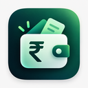

01
Android · 1.0.0
Download APK The app in your pocket.
Full local ledger and bill splitter. Android 8.0+. Signed Android APK. Updating an older app?

Pocket LedgerChoose Android for the full local ledger, or iOS for the expense Shortcut. Each platform uses its own Sheet and script.
Full local ledger and bill splitter. Android 8.0+. Signed Android APK. Updating an older app?
Log expenses with an Apple Shortcut and your own Sheet. A separate, simpler iOS workflow.
Copy Pocket Ledger — Android or Pocket Ledger — iOS. Use the matching script; the two workflows are separate.
Latest Android update · 6 November 2026: 1.0.0 (code 25) includes app update checks, Dashboard safety and private-connection backup fixes. Install over your compatible existing app; keep the existing app installed to retain its data.
Latest stable release & release notes
Before you download, read about offline storage, optional sync and backup limits.
Need help connecting your Sheet? Open the setup guide ↗